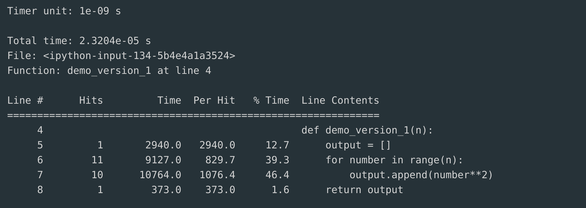
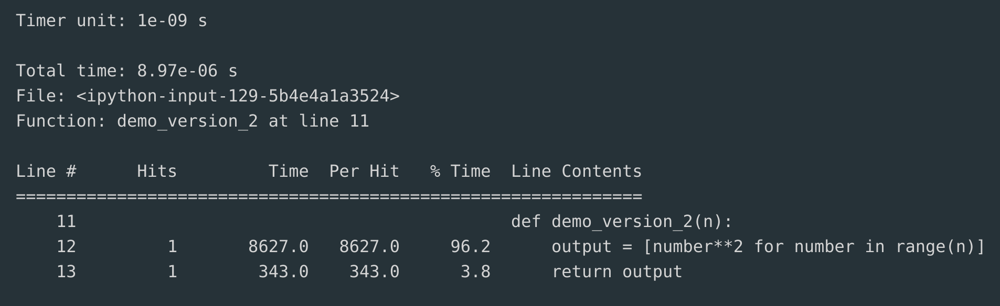

library(reticulate)
use_python("/Users/chammika/miniconda3/envs/quarto/bin/python3")All About Efficiency

What to expect in this chapter
In this chapter, I will broach the topic of writing efficient code. I will also discuss a diagnostic tool to profile your code and identify bottlenecks.
To begin with, in Python, efficient code is Pythonic code. Pythonic code uses the various idioms (e.g., list comprehension, chain comparison) that the language offers, along with the recommended style (spacing, correct naming conventions) indicated in the PEP8 guidelines. These make Pythonic code highly readable and fast.
Before we proceed, let me share a quote attributed to the great Donald Knuth is:
“Premature optimization is the root of all evil.”
So, please remember that optimization comes after you have written code that works. This is one point I constantly have to remind myself of, and I cannot emphasize it enough.
1 The Zen of Python
A good guide to writing Pythonic(efficient) code is the Zen of Python. The Zen of Python captures what the Python language is designed to achieve. Read more about what these mean in The Zen of Python: A guide to Python’s design principles.
import thisThe Zen of Python, by Tim Peters
Beautiful is better than ugly.
Explicit is better than implicit.
Simple is better than complex.
Complex is better than complicated.
Flat is better than nested.
Sparse is better than dense.
Readability counts.
Special cases aren't special enough to break the rules.
Although practicality beats purity.
Errors should never pass silently.
Unless explicitly silenced.
In the face of ambiguity, refuse the temptation to guess.
There should be one-- and preferably only one --obvious way to do it.
Although that way may not be obvious at first unless you're Dutch.
Now is better than never.
Although never is often better than *right* now.
If the implementation is hard to explain, it's a bad idea.
If the implementation is easy to explain, it may be a good idea.
Namespaces are one honking great idea -- let's do more of those!2 Python Idioms
Python idioms are common coding patterns that improve code readability and efficiency. Below are some common Python idioms. I won’t go into the details of these idioms. I recommend you look them up when you need to use them. However, some of these we have discussed in the previous sections.
2.1 List Comprehension
List Comprehension is a concise syntax for creating lists:
squares = [x ** 2 for x in range(10)]2.2 Dictionary Comprehension
Dictionary Comprehension is similar to list comprehension but for dictionaries:
squares_dict = {x: x ** 2 for x in range(10)}2.3 Enumerate
Enumerate allows us to get both index and value when iterating over a list:
for index, value in enumerate(['a', 'b', 'c']):
print(index, value)2.4 Zip
Zip allows us to combine two or more lists or tuples
names = ['Alice', 'Bob', 'Charlie']
scores = [85, 90, 78]
combined = list(zip(names, scores))2.5 Unpacking
Unpacking allows us to extract individual elements from tuples, lists, and dictionaries:
a, b, c = (1, 2, 3)2.6 Context Managers
Context Managers (with) help to ensure proper resource management:
with open('file.txt', 'r') as file:
content = file.read()2.7 Generators
Generators create memory-efficient sequences using generator expressions:
squares = (x ** 2 for x in range(10))2.8 All/Any
all/any check if all or any elements in a list meet a condition:
numbers = [2, 4, 6, 8]
if all(x % 2 == 0 for x in numbers):
print("All numbers are even.")2.9 Chain Comparisons
Chain Comparisons performs multiple comparisons succinctly:
x = 10
if 5 < x < 15:
print("x is between 5 and 15.")2.10 Set Operations
Set Operations allows easy membership tests and mathematical operations:
a = {1, 2, 3}
b = {2, 3, 4}
common = a & b3 Thinking about speed
Not all operations are created equally. Although the Zen of Python says There should be one– and preferably only one –obvious way to do it., Python has many subtle differences and hidden rewards/costs in using various syntaxes. There are so many of these that I have given up trying to remember them. Instead, I look for an ‘optimization’ when I am forced to look for one. However, it is good for you to try some of the suggested optimizations so that you know what is out there.
library(reticulate)
use_python("/Users/chammika/miniconda3/envs/quarto/bin/python3")Use %timeit or %%timeit to compare the execution speeds of the following:
| # | Option 1 | Option 2 |
|---|---|---|
| 1 | Using arange by non-lazy importing withfrom numpy import arange |
Using arange by lazy importing withimport numpy as np |
| 2 | Creating a list of squares with a for loop. |
Creating a list of squares with while loop |
| 3 | Creating a list of squares with a for loop. |
Creating a list of squares with list comprehension. |
| 4 | Creating a list of squares using list append. |
Creating a list of squares using list += |
| 5 | Creating a list of squares using list append. |
Creating a list of squares using Numpy append |
| 6 | Creating a list of squares using Numpy. | Creating a list of squares using list comprehension. |
| 7 | Creating a list of squares with a for loop and no function. |
Creating a list of squares with a for loop and pure function. |
| 8 | Creating a list of squares with a for loop and no function. |
Creating a list of squares with a for loop and lambda function. |
| 9 | Creating a list of squares with a for loop and pure function. |
Creating a list of squares with a for loop and lambda function. |
| 10 | Creating a list of squares with a for loop and class function. |
Creating a list of squares with a for loop and object function. |
| 11 | Create an empty objects like a list, dictionary, or set using the literal syntax ( [],{},()) . |
Create an empty objects like a list, dictionary, or set using the formal name (e.g. list(), dict(), set()) |
| 12 | Create a list of integers using list comprehension and range(). |
Create a list of integers using unpacking and range(). |
| 13 | Create a list of integers using list() and range(). |
Create a list of integers using unpacking and range(). |
| 14 | Apply a function (that squares) to a list of integers using range() and list comprehension. |
Apply a function (that squares) to a list of integers using range() and map(). |
| 15 | Multiply the elements in a list by 2 using list comprehension. | Multiply the elements in an array by 2 using list comprehension. |
4 Numpy is King
When it comes to mathematics, nothing much can beat Numpy arrays. Numpy can be fast because its arrays are homogenous in type. So, there is no overhead due to type checking. Also, it uses optimized routines to apply mathematical operations to the data which is contiguous memory locations.
I cannot describe everything you should or should not do with Numpy arrays. However, let me highlight some basic ideas that you should bear in mind.
4.1 Things to consider about Numpy
Vectorize when possible
To make the most out of Numpy arrays, you must rethink your code to work on all your data simultaneously. for loops (and even list comprehensions) are inherently slow compared to Numpy vectorized operations. So, when possible, replace the for loops and list comprehensions with vectorized operations.
Let me demonstrate with an example.
Example 1 (Checking a collision with a wall)
Let’s say we are running a simulation with 1000 particles moving about. We must check if any particles have hit the wall at \(x=0\). If it has, we must reverse the \(x\)-component of the particle’s velocity.
The simulation maintains the \((x,y)\) positions and \((v_x,v_y)\) velocities.
- The positions are in an Numpy array
particle_positionsin the format \([[x_1,y_1],\ldots [x_{1000},y_{1000}]]\). - The velocities are in an Numpy array
particle_velocitiesin the format \([[vx_1,vy_1],\ldots [vx_{1000},vy_{1000}]]\).
We can do this with a for loop as:
for particle_index, particle_position in enumerate(particle_positions):
x, y = particle_position
if x <= 0:
particle_velocities[particle_index, 0] *= -1However, we can also do it without a for loop as:
mask = particle_position[:, 0] <= 0
particle_velocities[mask, 0] *= -1The latter is much faster. It is less verbose and easy to read.
Be mindful of changing size
This also means that you have to be careful not to change the size of the array, as this means an entirely new array needs to be created. Check for yourself…
a = np.arange(10)
b = np.append(a, 11)
print(f'{id(a)=}, {id(b)=}')Views and Copies
Numpy has a highly optimized layout of its arrays, allowing us to manipulate them without upsetting how the data is stored. This brings us to the topic of views and copies. The former does not upset the layout of the data in the array; you are just looking (viewing) the data differently. These operations can be very fast. However, a copy, is a new copy and can be slower. You can find out more about this here.
Let me also show you a quick example. Consider the following.
a = np.arange(9)
print(a)[0 1 2 3 4 5 6 7 8]a.reshape((3, 3))array([[0, 1, 2],
[3, 4, 5],
[6, 7, 8]])a.resize((3, 3))
print(a)[[0 1 2]
[3 4 5]
[6 7 8]]Although the outputs of reshape() and resize() look the same, resize() is about twice as fast (Check it with %timeit). This is because resize() changes in-place and provides a ‘view,’ but reshape() gives a copy!
However, be careful; ‘views’ need to be treated carefully, or it will change the original data it is viewing.
5 Profiling
Once you have written some code, you may want to evaluate its efficiency and identify any bottlenecks to know where to optimize your code. A handy tool for this purpose is the Line Profiler package. Let me show you how to use it.
5.1 Setting up line_profiler
You must install it first since it is not included in the Python standard library.
conda install -c conda-forge line_profiler -yAfter installing it, you must load the package into Jupyter’s magic commands by adding the following line to your Python code.
%load_ext line_profiler5.2 Using line_profiler
Function version 1
Let’s profile the following function:
def demo_version_1(n):
output = []
for number in range(n):
output.append(number**2)
return outputWe activate the line_profile using the following syntax within your Jupyter cell.
%lprun -f demo_version_1 demo_version_1(10)The format of the command is as follows:
%lprun -f NAME_OF_FUNCTION_TO_PROFILE FUNCTION_TO_RUN()When you do this, you will end up with an output like:

Here is what each of the values means:
| Parameter | Meaning |
|---|---|
| Line number | The position of the line in the function. |
| Hits | Number of times the line was executed. |
| Time | Total time taken by the line. The timer unit is specified at the top of the table. |
| Per Hit | The average time to execute a line (Time/Hits). |
| % Time | The percentage of time taken per line compared to other lines. |
| Line contents | The actual source code of the line. |
Let’s see if we can improve things by using list comprehension.
Function version 2
def demo_version_2(n):
output = [number**2 for number in range(n)]
return output%lprun -f demo_version_2 demo_version_2(10)The output I got was:

So, we have cut down the time it takes to create the list of squares from about 20 ms in demo_version_1() to about 9 ms in demo_version_2().
Be careful
The times reported by %lprun depends on what else your CPU is doing. So, the percentage times identified by %lprun are more reliable than the absolute times.
6 Numba
Let me end this chapter by introducing you to Numba, a way to ‘accelerate’ Python code that uses a lot of Numpy arrays. There is an excellent 5-minute guide to get going with Numba so I won’t talk any more about it. However, please remember that no tricks can match the gain in speed one can achieve by improving your algorithms and code design.